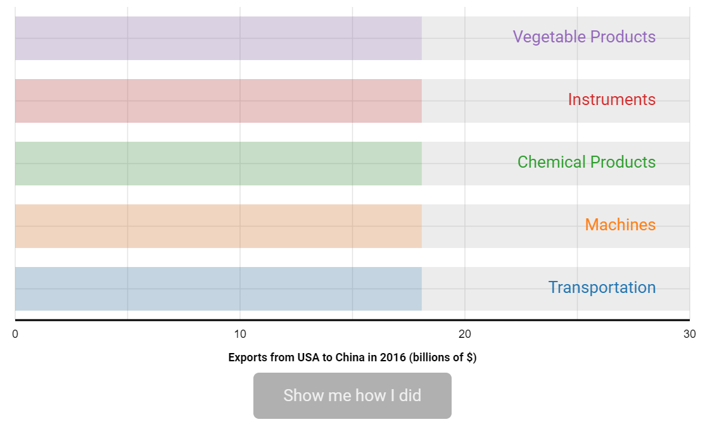

CO582: Computer Interaction and User Experience
Evaluation
Tomas Petricek
email: t.petricek@kent.ac.uk
twitter: @tomaspetricek
office: S129A
{kind=link}
Evaluation in context
1. Usability | 2. Accessibility |
3. Operations | 4. Ethics |
1. Usability | 2. Accessibility |
3. Operations | 4. Ethics |

Does the user interface work?
Can users enable cookies they want?
Evaluating user experience
What can we evaluate about user experience?
Are there any usability issues?
Are users more efficient with a new product?
Does a design encourage new way of thinking?
How do we know that what we've done works?
1. Usability | 2. Accessibility |
3. Operations | 4. Ethics |

Taking accessibility seriously
What if you need to develop a web that works for everyone?
Accessibility needs for government web sites
Partial list from government accessibility site
- I am colorblind and cannot perceive some colors
- I have low vision and need big font in my browser
- I am blind and use a screenreader
- I am deafblind and use a braille device
- Mild motor impairment so struggle to use a mouse
- Severe motor impairment and use voice control
- Autistic spectrum & have a literal understanding of text
- Epilepsy seizures can be triggered by flashing content
1. Usability | 2. Accessibility |
3. Operations | 4. Ethics |
Can results of evaluation lead to a change?
Framing - what we consider and what we ignore
Alternatives - what decisions can you make?
Uncertainties - could the outcome be by accident?
Value - how do you evaluate outcomes?
Decision maker - need one person to decide
Commitment to action - will we actually do it?
1. Usability | 2. Accessibility |
3. Operations | 4. Ethics |

Should we run all experiments?
But we're just evaluating two versions of an algorithm!
Ethical issues of evaluation

Studies directly involving users
- Always requires informed consent
- Consider the risk of intervention
- Explain the purpose of the research
Analytics and remote testing
- Facebook terms and conditions allow that
- GDPR lets you get all data about yourself
- Aggregated tracking vs. manipulation
From data to conclusions
Data, information and conclusions
Data is what we collect
Usage statistics, survey data, performance
For example, visited pages on a web site
Information is what we get by analysis
What groups of users follow what paths
Say, phone users never reach a certain page
Conclusions is what we decide to do
Interpretation of reasons behind information
For example, make a prominent navigation link!
Gathering data
Data can range from numbers to written reports
Interviews (structured, semi-structured or open)
Questionnaires (offline or online)
Observation (in the lab or in the wild)
Logging (usage data about computer system)
Analysing data

Qualitative data analysis
- Nature of something
- Themes, patterns, stories
- Imprecise, but wide scope
Quantitative data analysis
- Numerical methods to ascertain size or scale
- Average values, time spent completing a task
- Precise information about narrow domain
Theoretical frameworks for analysis

Qualitative data analysis
- Distributed cognition models
- Critical incident analysis
- Categorization by two markers
Quantitative data analysis
- Statistical analysis of significance
- GOMS: Goals, Operators, Methods, Selection
- Predictive models of user actions
Evaluation in controlled setting
Evaluation in controlled setting
Testing a hypothesis
- Users can complete a given task
- Efficiently or without errors
- One method is better than other
Producing reproducible results
- Experimental setup
- Control all other variables
- Statistical analysis (p-value)
Detecting a tank using neural networks
Tank photos on sunny day, other photos rainy
Experimental setup
What to test and how to test
Time to completion, number or scale of errors
Recall of presented information
Labs for fully controlled environment
Amazon Mechanical Turk for online studies

Making sense of numbers
What information people know?
What is a good analogy?
Does analogy help later recall?
To put that in perspective (Riederer et al., 2018)
Finding and evaluating good analogies
About 350 Amazon MTurk workers
E1: Compare different multipliers and states
E2: Is best numerical fit or home state better?
E3: Repeat after 6 weeks without perspective


Does interactivity make you think?
https://dataviz-study.azurewebsites.net/demo/step1
Test recall of numerical values from a newspaper article
Interactive, static and text-only versions
Statistical analysis of results

"The article listed top 5 categories of products (...).
The two largest categories accounted for roughly
the same amount of total exports. Please select
the two top categories."
Statistical analysis of results
| Group | Both | Mach | Trans | None |
|---|---|---|---|---|
| Interactive | 20 | 9 | 1 | 1 |
| Static chart | 17 | 14 | 1 | 0 |
| Text only | 11 | 19 | 4 | 0 |
Is the interactive version significantly better?
Statistical analysis of results
The p-value is the probability of finding the observed, or more extreme, results when the null hypothesis of a study question is true.
A small p-value (\(\leq\) 0.05) indicates strong evidence against the null hypothesis, so you reject the null hypothesis.
See also: Analysis of variance (ANOVA), Chi-squared test

Taking evaluation seriously
Medical registered randomized control trials
Medical studies
How (not) to prove what you want to prove
Compare against control group with placebo
Assign participants randomly to groups
Use consistent categorization of effects
Register study protocol in advance
Evaluation in natural setting
Evaluation in natural setting

What is the purpose?
- Identify new technology needs
- Understand requirements
- Inform development
Study methodology
- Observation in the field
- Ethnography studies
- Participatory design
Frameworks for observation in the field
Giving observation more structure
- Space - What is the physical space?
- Actors - Who is involved?
- Activities - What is who doing and why?
- Objects - What things are present?
- Acts - What are individual actions?
- Events - Is it part of an event?
- Time - What is the sequence of acts?
- Goals - Why is this happening?
- Feelings - What is the mood?
How do people
learn advanced
Excel features?
Observe users
during their work
Ask follow-up interview questions to clarify
Evaluation in natural settings
Studying usage in the wild
Real-world use of an early prototype
Collect quantitative and qualitative data
Theoretical frameworks to guide the study
Think-aloud, diaries, logs and analytics
Evaluation with indirect user involvement
Evaluation with indirect user involvement

Evaluation without participants
- Easy and inexpensive setup
- Social media, web analytics
- Should you tell the users?
Experimental methods
- Expert evaluation of the system
- Collecting actual usage data
- A/B testing to compare variants
Expert evaluation without users
Heuristic evaluation and walkthroughs
Can be used with early prototypes
Heuristic evaluation using 10 rules
Simulating user's problem solving process
Five evaluators find 75% of problems
Different rules for different products
Web page analytics
Statistics on visitors and page views
Where they come from, how they behave?
Web page analytics
What can you find on Google Analytics?
Pages with the largest number of views
Language, country and device used
Number of visitors, visits and views
Traffic sources and search keywords
A/B testing
What version is more effective?
A/B testing
Evaluating variations of a product in use
Google in 2001: How many results to show?
Measure clicks, purchases or likes
Needs a product you can change and users
Statistical analysis of significance
When to evaluate
What, where and when of evaluation
What to evaluate
Lo-fi prototype - limited, but easy to do early
Running software - need to write it first, but realistic
Where to evaluate
In a lab - controlled, but may not be relevant
In the wild - less precise, but may say useful things
When to evaluate
Early in the process - get feedback for development
Finished product - assess the quality of the work
When not to use evaluation?

If I had asked people what they wanted, they would have said faster horses.
(Incorrectly attributed
to Henry Ford)
When not to use evaluation?
Limitations of evaluation methods
You can test only what you can imagine
Users are talking in well understood terms
Quantitative can only help you choose
Can make it hard to see new ideas
Summary
Different kinds of evaluation
Evaluation in controlled setting
Precise answers to narrow questions
Test usability, compare methods
Evaluation in natural setting
Broad answers to interesting questions
How people really use your product
Evaluation without direct participants
Less expensive, but limited questions
Expert analysis or data collection
CO582: Evaluation
What you should remember from this lecture
- Accessibility, ethics and operation
- Kinds of evaluation and their limits
- Design lab experiment or an A/B test
Tomas Petricek
t.petricek@kent.ac.uk | @tomaspetricek
References
Books
-
HCI Models, Theories and Frameworks, ed. J. Carroll
Chapter 7,8 (Data analysis), Chapter 13-15 (Evaluation)
Papers and links